漫画版
第二話「半額セールの買い付け」
翌日・警察署の資料室
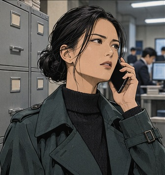
昨日のセールに来た方ですね。売り場の写真を持って、伺います。
壺の聞き込みも続けますか？
ええ。壺が消えたころ、売り場で何を見たか聞きましょう。
収集家の家へ。朝倉は売り場の写真を携えていた。
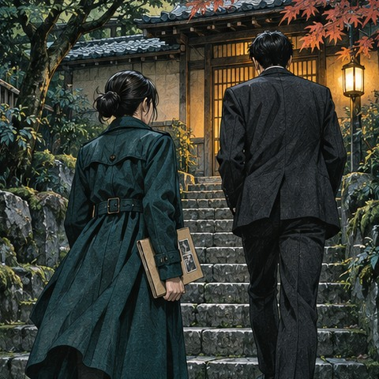
収集家の家
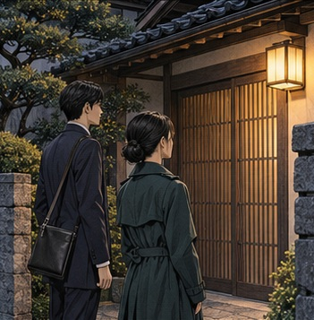
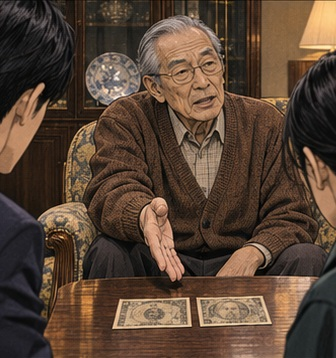
田中君に二千円を預けて、メダルを買ってきてもらったんです。
1 / 4
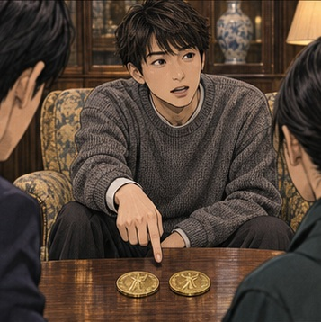
半額で一枚千円。二枚で二千円です。お釣りはありません。
収集家が、受け取った二枚を机の中央へ滑らせた。
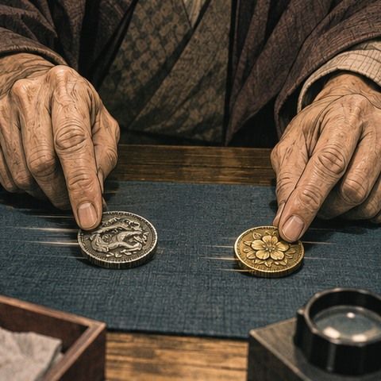
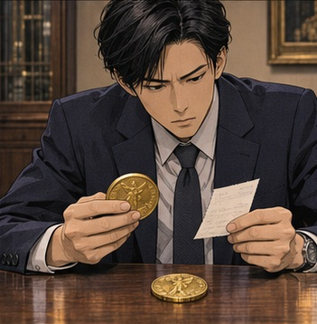
金額が合うと、僕はそこで安心してしまうんです。
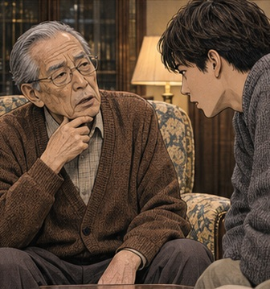
一枚に千円の札が付いていた覚えがなくてね。
半額の札はありましたよ。
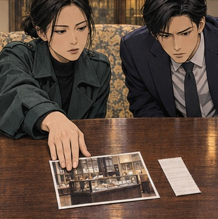
昨日の売り場を撮ってあります。
その千円、何に付いてる札ですか？
2 / 4
昨日の売り場写真
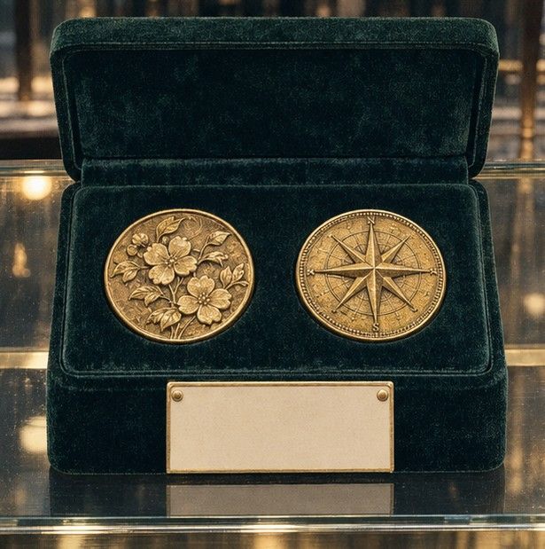
半額 1,000円| 品名 | 記念メダルセット |
|---|---|
| 数量 | 2 |
| 単価 | 1,000円 |
| 合計 | 2,000円 |
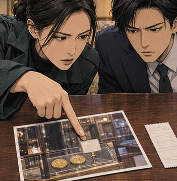
一箱千円。二箱なら……四枚だ！
3 / 4
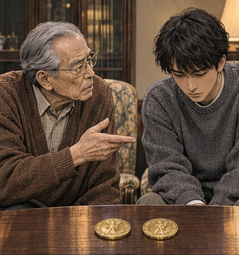
田中君、残りの二枚はどこだい？
朝倉の記録 購入四枚・受取二枚。残る二枚の所在は未確認。
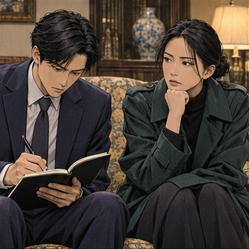
壺が消えた時刻と照らしたいんです。田中さん、何時に店へ？
帰り道・蔵の市の店主から着信
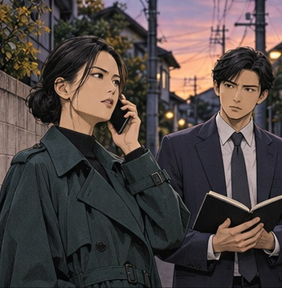
探していた青い葉の壺に似た写真が、市場から届きました。
写真を送ってください。朝倉、市場の住所も。
4 / 4